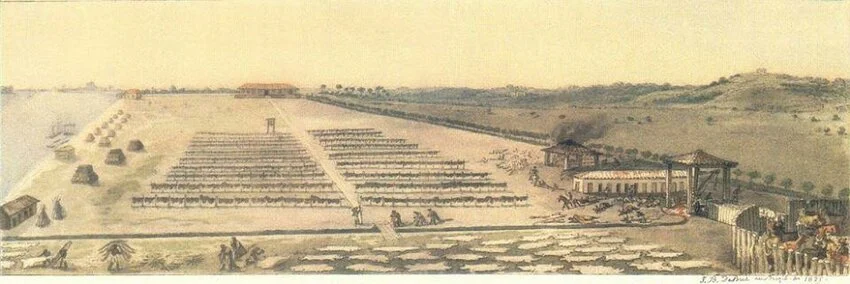
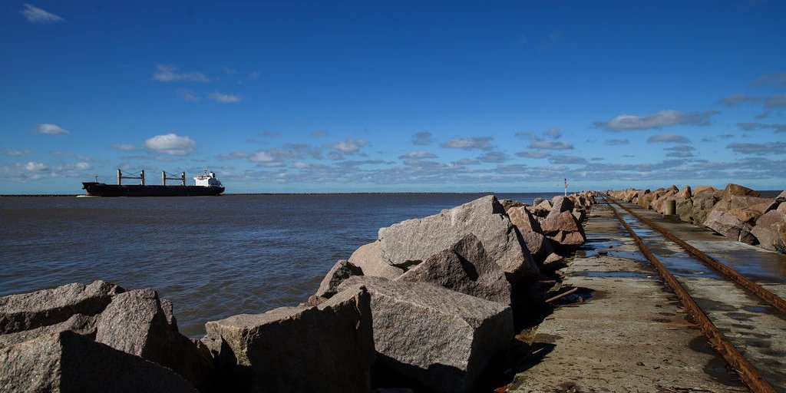

A Origem Estratégica :
A origem de Rio Grande foi estritamente planejada como uma operação militar de ocupação territorial. No século
XVIII, a região era uma "terra de ninguém" disputada entre as coroas de Portugal e Espanha. Para garantir a
posse do sul do Brasil e proteger o caminho até a Colônia do Sacramento (no atual Uruguai), Portugal enviou o
Brigadeiro José da Silva Paes
com uma missão clara: fortificar a entrada da laguna.
Em 19 de fevereiro de 1737, Silva Paes desembarcou na margem ocidental do canal e fundou o
Presídio de Jesus, Maria, José.
Este "presídio" não era uma cadeia, mas sim uma guarnição militar fortificada. A escolha do local foi
estratégica por ser a única "barra" (canal de acesso) que permitia a entrada de navios na Lagoa dos Patos,
funcionando como um portão de controle para todo o interior do atual estado do Rio Grande do Sul.
Essa fundação serviu como uma sentinela avançada, bloqueando as pretensões espanholas de subir pelo litoral e
garantindo que os colonos portugueses pudessem ocupar as terras vizinhas com segurança. Assim, Rio Grande nasceu
não apenas como uma cidade, mas como o primeiro e mais importante posto de vigília da fronteira sul do Império
Português.
Conflitos e Mudanças de Capital :
Por ser uma zona de fronteira cobiçada, a cidade viveu décadas de instabilidade. Em 1760, tornou-se a primeira capital da Capitania do Rio Grande de São Pedro, mas, apenas três anos depois, foi invadida pelos espanhóis, permanecendo sob domínio estrangeiro por 13 anos. A retomada só ocorreu em 1776, sob o comando de Rafael Pinto Bandeira. Mais tarde, durante a Revolução Farroupilha, a cidade mostrou sua importância política ao tornar-se novamente a sede do Governo Imperial, já que Porto Alegre estava sitiada. Essa lealdade ao Império em meio ao caos da guerra civil consolidou Rio Grande como um pilar de resistência na história gaúcha.
O Apogeu Econômico (Século XIX e XX) :
A prosperidade de Rio Grande floresceu com a chegada de colonos açorianos e madeirenses, que impulsionaram o comércio e a agricultura. No século XIX, a cidade tornou-se o pulmão econômico da província através das charqueadas e da exportação de couro. A elevação à categoria de cidade em 1835 marcou o início de uma era de ouro, onde a riqueza gerada pelo porto financiou casarões neoclássicos e instituições de prestígio, como a Biblioteca Rio-Grandense. O desenvolvimento industrial e portuário transformou a vila militar em um centro urbano cosmopolita, conectando o Rio Grande do Sul diretamente com os mercados da Europa e das Américas.

Imagem de um engenho de carne seca.
Identidade e Geografia Única :
Rio Grande possui uma fisionomia moldada pelas águas. Conhecida como a "Noiva do Mar", sua identidade está profundamente ligada à Laguna dos Patos e ao oceano. Essa geografia singular permitiu a existência da Praia do Cassino, o balneário mais antigo do Brasil e famoso por sua extensão recorde. Culturalmente, a cidade guarda as raízes luso-brasileiras mais profundas do estado, visíveis na culinária baseada em frutos do mar e na arquitetura de seu centro histórico. A relação com a "barra" e os molhes é, até hoje, o que define o modo de vida e o orgulho do povo rio-grandino.

Imagem da barra, a entrada da Laguna dos Patos para o Oceano Atlântico.
Atualmente, Rio Grande se posiciona como um dos principais polos navais e logísticos do Brasil. O Porto do Rio Grande é o motor da economia local, sendo um complexo moderno que movimenta milhões de toneladas em grãos, fertilizantes e contêineres anualmente, servindo a todo o Mercosul. Além da força industrial, a cidade busca equilibrar o progresso com a preservação de seu vasto patrimônio histórico e ambiental. É um município que olha para o futuro como um centro tecnológico e universitário, sem nunca esquecer o seu passado como o berço pioneiro do Rio Grande do Sul.
Outras informações sobre :
| Informação | Detalhe |
|---|---|
| Estado | Rio Grande do Sul |
| População estimada | 198.935 habitantes (2025) |
| População no último censo | 191.900 pessoas (2022) |
| Fundação | 19 de fevereiro de 1737 |
| Fundador | Brigadeiro José da Silva Paes |
| Gentílico | Rio-grandino |
| Área territorial | 2.682,867 km² |
| Densidade demográfica | 71,53 hab/km² (2022) |
| IDHM | 0,744 (2010) |
| Principal atividade | Porto e pesca |
| Prefeita (2025) | Darlene Torrada Pereira |
| Localização | Margem sul do estuário da Laguna dos Patos |
| Curiosidade histórica | Cidade mais antiga do Rio Grande do Sul |
| Praia | Cassino — um dos principais balneários do RS |
Obrigado por entrar no meu site!
Fico muito feliz com a sua visita. Preencha abaixo: